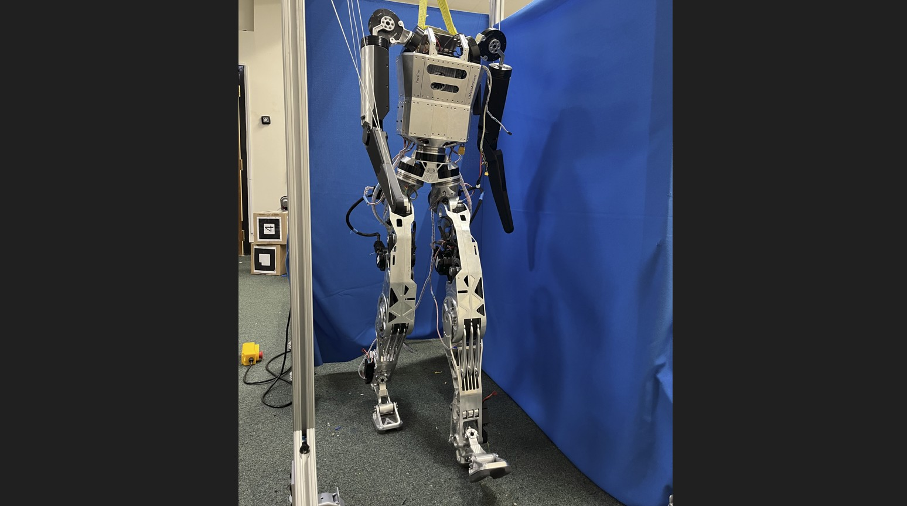

← All Projects
Prestoe — Upgrading a Humanoid Robot
Humanoid · Motor ControlPrestoe is a humanoid robot platform that I upgraded to run at 80 volts, significantly increasing the power available to its actuators and enabling faster, more dynamic motion.
The upgrade involved replacing the original battery system with a new high-voltage pack, integrating new motor drivers, and switching the communication bus to CAN-FD for higher bandwidth and lower latency.
The result is a noticeably faster and more capable robot, with a communication architecture that can support future expansion as more joints and sensors are added to the platform.
